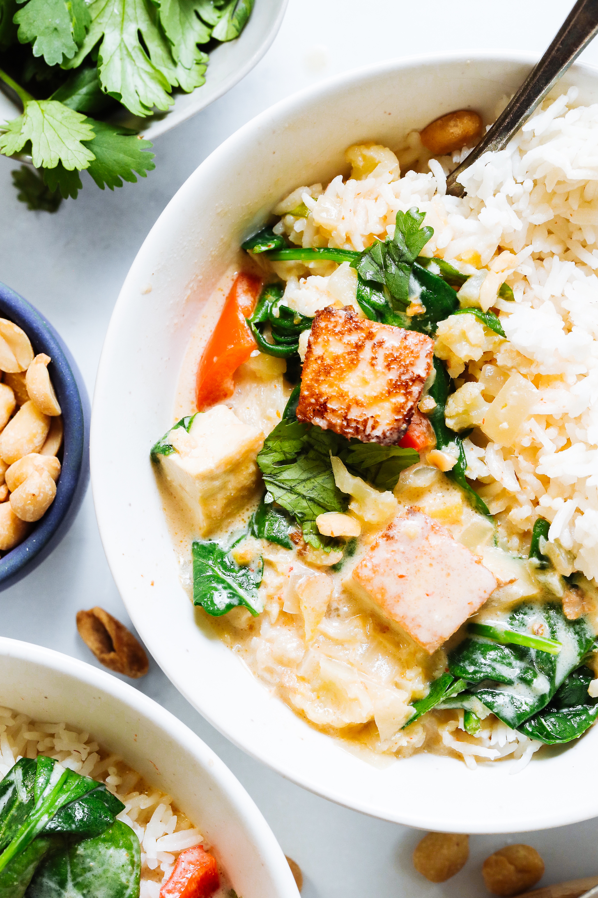

Curry that's faster to make than it is to get delivered? We're in. We've done green, red, yellow, and Massaman curries, but we were missing another Thai classic: panang curry! Never had it? It's like red curry's richer, milder, peanutty cousin, and it's SO good!
This is our inspired, veggie-packed version made with easier-to-find ingredients and your choice of chicken or tofu for protein. It's SO rich and comforting, you won't believe it only takes 30 minutes. Let us show you how it's done!